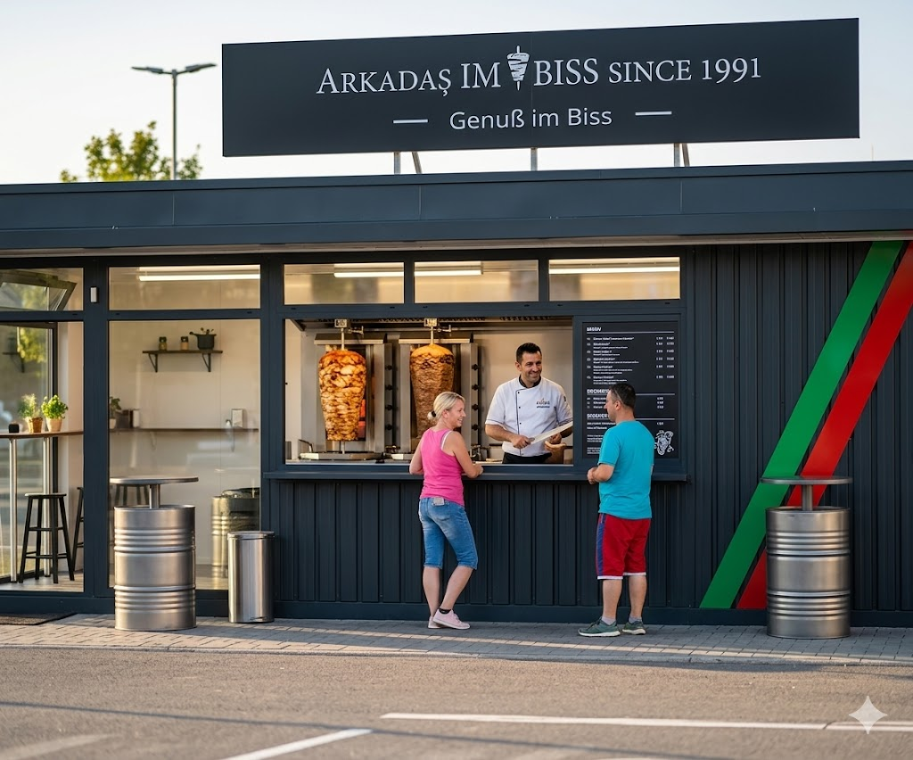

Balingens Bester Dreh
Genuss im Biss
Frisches Brot. Knackiges Gemüse. Perfekt gewürztes Fleisch.
Handwerklich
zubereitet seit über 30 Jahren.
Unsere Geschichte
Erfahrung, die man schmeckt.
Seit 1991 steht der Name Arkadas für kompromisslose Qualität. Wir verwenden nur ausgesuchte Zutaten, marinieren unser Fleisch selbst und bereiten jede Portion mit größter Sorgfalt zu.
Du findest unseren unverkennbaren Stand direkt auf dem toom-Parkplatz in Balingen. Ein Ort, an dem Traditionsträume und echter Geschmack aufeinandertreffen.